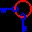
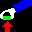
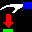

| Manual |
|
Graphic |
|
14. GRAPHIC LIBRARY
Seed7 provides a portable graphics library. Below is the graphical "Hello world" program:
$ include "seed7_05.s7i"; include "dialog.s7i"; const proc: main is func begin messageWindow("hello world"); end func;
This program displays a popup window with the message "hello world". The popup window contains an OK button, which terminates the program. A program that creates an empty window and a message popup is:
$ include "seed7_05.s7i"; include "dialog.s7i"; const proc: main is func begin screen(640, 480); messageWindow("hello world"); end func;
The function screen(640, 480) opens a window with a width of 640, a height of 480, and a black background. The window is assigned to the global variable curr_win, which is used as the default window by drawing functions.
Displaying an empty window without a message box is done with:
$ include "seed7_05.s7i"; include "draw.s7i"; include "keybd.s7i"; const proc: main is func begin screen(640, 480); ignore(getc(GRAPH_KEYBOARD)); end func;
This program waits until a key is pressed. The key is read from the file GRAPH_KEYBOARD. Without reading from GRAPH_KEYBOARD, the program would terminate immediately.
14.1 Keyboard
The files GRAPH_KEYBOARD and CONSOLE_KEYBOARD interface the keyboard. Which one is actually connected to the keyboard depends on the program type:
- In graphic programs, the keyboard is connected to GRAPH_KEYBOARD.
- In console programs, the keyboard is connected to CONSOLE_KEYBOARD.
The variable KEYBOARD is initialized to refer to CONSOLE_KEYBOARD. Since using KEYBOARD is preferred for keyboard operations, a graphic program should perform the following assignment:
KEYBOARD := GRAPH_KEYBOARD;
Afterwards, it should just use the variable KEYBOARD. Keyboard files like KEYBOARD support the following functions:
getc(KEYBOARD) Wait until a key is pressed and return it immediately. The pressed key is not written (echoed). getc(KEYBOARD, NO_WAIT) If a key has been pressed, return it; otherwise return KEY_NONE. inputReady(KEYBOARD) Determine if at least one character can be read without blocking. buttonPressed(KEYBOARD, button) Determine if a given button is currently pressed. clickedXPos(KEYBOARD) X position of the mouse cursor when a button was pressed. clickedYPos(KEYBOARD) Y position of the mouse cursor when a button was pressed.
Beyond these normal file operations like gets, getwd, and getln are available as well.
Every time a read from the keyboard occurs the graphic operations are flushed. This means that the graphic output shown corresponds to the latest drawing operations. If nothing is read from the keyboard, the graphic output may lag behind. In this case the procedure flushGraphic can be used to flush the graphic commands such that the contents of all windows is up to date.
By default, the close button of a window (often marked with X) just exits the program. By default, resizing a window is also not communicated to the program. These two events can be activated with selectInput. This way, a program can also receive KEY_CLOSE and KEY_RESIZE.
The chapter 8.8 (Keyboard file) describes keyboard files in detail. The program gkbd.sd7 can be used to see the keys received by getc(KEYBOARD).
14.2 Color
The program below creates a window with a light green background:
$ include "seed7_05.s7i"; include "draw.s7i"; include "keybd.s7i"; const proc: main is func begin screen(640, 480); clear(light_green); KEYBOARD := GRAPH_KEYBOARD; # Set the KEYBOARD as explained above. ignore(getc(KEYBOARD)); end func;
In the example above the function clear clears the background color of curr_win, which has been opened by screen.
The library "color.s7i" defines the type color as:
const type: color is new struct var integer: redLight is 0; var integer: greenLight is 0; var integer: blueLight is 0; end struct;
The function color converts RGB values in the range 0 to 65535 into a color value. For example:
color(65535, 32768, 0) # Orange
Colors use the additive color model with red, green and blue lights. The addition of two colors like:
color(65535, 32768, 0) + color(8704, 35584, 8704) # Orange + Forest Green
results in
color(37119, 34176, 4352) # Dark Olive
The program below clears the window with a color computed from the keys pressed:
$ include "seed7_05.s7i"; include "draw.s7i"; include "keybd.s7i"; const proc: main is func local var char: command is ' '; begin screen(640, 480); KEYBOARD := GRAPH_KEYBOARD; repeat command := getc(KEYBOARD); clear(color(1009 * ord(command) mod 65536, 4999 * ord(command) mod 65536, 9973 * ord(command) mod 65536)); until command = KEY_ESC; end func;
The library "color.s7i" defines constants for several colors:
const color: black is color(0, 0, 0); # Black const color: dark_red is color(32768, 0, 0); # Maroon const color: dark_green is color(0, 32768, 0); # Green const color: brown is color(32768, 16384, 0); # Brown const color: dark_blue is color(0, 0, 32768); # Navy const color: dark_magenta is color(32768, 0, 32768); # Purple const color: dark_cyan is color(0, 65535, 65535); # Aqua const color: light_gray is color(49152, 49152, 49152); # Silver const color: middle_gray is color(32768, 32768, 32768); # Gray const color: dark_gray is color(16384, 16384, 16384); # Dark Gray const color: light_red is color(65535, 0, 0); # Red const color: light_green is color(0, 65535, 0); # Lime const color: yellow is color(65535, 65535, 0); # Yellow const color: light_blue is color(0, 0, 65535); # Blue const color: light_magenta is color(65535, 0, 65535); # Fuchsia const color: light_cyan is color(32768, 65535, 65535); # Pale Cyan const color: lavender is color(32768, 32768, 65535); # Neon Blue const color: white is color(65535, 65535, 65535); # White const color: orange is color(65535, 32768, 0); # Orange const color: amber is color(49152, 32768, 16384); # Brandy Punch const color: pink is color(65535, 32768, 32768); # Light Coral const color: light_pink is color(65535, 32768, 65535); # Fuchsia Pink const color: mint is color(21845, 57343, 21845); # Mint Green const color: forestgreen is color(8704, 35584, 8704); # Forest Green const color: middle_blue is color(0, 0, 43008); # Royal Blue
In addition to these, it defines basic HTML colors:
const color: Black is color(0, 0, 0); # Black const color: Maroon is color(32768, 0, 0); # Maroon const color: Green is color(0, 32768, 0); # Green const color: Navy is color(0, 0, 32768); # Navy const color: Silver is color(49152, 49152, 49152); # Silver const color: Red is color(65535, 0, 0); # Red const color: Lime is color(0, 65535, 0); # Lime const color: Blue is color(0, 0, 65535); # Blue const color: Gray is color(32768, 32768, 32768); # Gray const color: Purple is color(32768, 0, 32768); # Purple const color: Olive is color(32768, 32768, 0); # Olive const color: Teal is color(0, 32768, 32768); # Teal const color: White is color(65535, 65535, 65535); # White const color: Fuchsia is color(65535, 0, 65535); # Fuchsia const color: Yellow is color(65535, 65535, 0); # Yellow const color: Aqua is color(0, 65535, 65535); # Aqua
14.3 Drawing primitives
The program below shows the usage of several drawing primitives:
$ include "seed7_05.s7i"; include "draw.s7i"; include "keybd.s7i"; const proc: main is func begin screen(640, 480); KEYBOARD := GRAPH_KEYBOARD; point(10, 50, white); line(20, 50, 50, 0, yellow); lineTo(100, 50, 150, 50, light_green); lineToAngle(200, 50, 50, -PI / 4.0, light_red); rect(10, 100, 200, 100, light_blue); # Filled rectangle with a width of 200 and a height of 100. rectTo(250, 100, 450, 200, dark_green); box(10, 250, 200, 100, yellow); # Outline of a rectangle with a width of 200 and a height of 100. boxTo(250, 250, 450, 350, white); fcircle(550, 100, 50, dark_red); circle(550, 250, 50, light_red); fellipse(475, 350, 150, 50, orange); arc(550, 225, 50, PI / 4.0, PI / 2.0, yellow); arc(550, 275, 50, 5.0 * PI / 4.0, PI / 2.0, 5, white); # The inward width of this arc is 5. pieslice(550, 275, 50, PI / 4.0, PI / 2.0, light_cyan); ignore(getc(KEYBOARD)); end func;
Note that the origin (0, 0) is at the top left corner of the drawing area and that the y-coordinate progresses downward. Angles are measured in radians, the angle 0.0 points straight to the right, and positive angles go counter-clockwise (as it is done in mathematics).
Custom shapes can be drawn as well. The type pointList is able to store a sequence of relative 2-D point coordinates. The function genPointList creates a pointList from an array with alternating x and y values. The program below draws the outline of a star beside a filled star-shaped polygon:
$ include "seed7_05.s7i"; include "draw.s7i"; include "keybd.s7i"; const proc: main is func local var pointList: star is genPointList([] ( 100, 0, 121, 66, 190, 66, 135, 106, 156, 172, 100, 131, 44, 172, 65, 106, 10, 66, 79, 66, 100, 0)); begin screen(600, 380); KEYBOARD := GRAPH_KEYBOARD; polyLine(70, 100, star, light_red); fpolyLine(330, 100, star, light_blue); ignore(getc(KEYBOARD)); end func;
14.4 Opening a window
The function screen opens the default window (curr_win) of a program. The created window has window decorations such as a title bar and border, and it is managed by the window manager. Using screen is convenient if just one window is needed. In case more than one window is needed, a new top-level window can be opened with openWindow as well:
$ include "seed7_05.s7i"; include "draw.s7i"; include "keybd.s7i"; const proc: main is func local var PRIMITIVE_WINDOW: blackWindow is PRIMITIVE_WINDOW.value; var PRIMITIVE_WINDOW: greenWindow is PRIMITIVE_WINDOW.value; begin blackWindow := openWindow(100, 100, 200, 200, "black"); greenWindow := openWindow(400, 100, 200, 200, "green"); clear(greenWindow, light_green); ignore(getc(GRAPH_KEYBOARD)); end func;
Note that openWindow opens a window with a black background. As shown above the window background can be changed with clear.
The function openSubWindow can be used to open a sub-window inside a parent window. This sub-window has no window decorations and is not managed by the window manager. Below is a program which uses a sub-window to draw an hourglass at the cursor position:
$ include "seed7_05.s7i"; include "draw.s7i"; include "keybd.s7i"; include "pic32.s7i"; include "time.s7i"; include "duration.s7i"; const proc: main is func local var PRIMITIVE_WINDOW: hourglass is PRIMITIVE_WINDOW.value; begin screen(640, 480); hourglass := openSubWindow(curr_win, 1000, 1000, length(hourglass_pic[1]), length(hourglass_pic)); put(hourglass, 0, 0, createPixmap(hourglass_pic, 1, black)); KEYBOARD := GRAPH_KEYBOARD; setCursorVisible(curr_win, FALSE); repeat setPos(hourglass, pointerXPos(curr_win) - width(hourglass) div 2, pointerYPos(curr_win) - height(hourglass) div 2); wait(30000 . MICRO_SECONDS); until inputReady(KEYBOARD); end func;
The variable hourglass is of type PRIMITIVE_WINDOW. A variable of this type can hold a window (which is on screen) or a pixmap (which is off-screen). The function openSubWindow creates a sub-window inside the parent window curr_win. The window curr_win has a title bar. The window created by openSubWindow does not have a title bar or a border. The function createPixmap is used to create the pixmap of an hourglass by using a picture from the library "pic32.s7i". The function setCursorVisible disables the visibility of the mouse cursor for curr_win. The functions pointerXPos and pointerYPos return the current X and Y coordinates of the mouse cursor. The function setPos is used to position the hourglass to the cursor position (minus half of the width and height of the hourglass).
If openSubWindow is called with an empty window as parent window, an unmanaged top-level window without window decorations is generated. The program below displays an hourglass at the cursor position until a key is pressed:
$ include "seed7_05.s7i"; include "draw.s7i"; include "keybd.s7i"; include "pic32.s7i"; include "time.s7i"; include "duration.s7i"; const proc: main is func local var PRIMITIVE_WINDOW: hourglass is PRIMITIVE_WINDOW.value; begin hourglass := openSubWindow(PRIMITIVE_WINDOW.value, 1000, 1000, length(hourglass_pic[1]), length(hourglass_pic)); put(hourglass, 0, 0, createPixmap(hourglass_pic, 1, black)); KEYBOARD := GRAPH_KEYBOARD; repeat setPos(hourglass, pointerXPos(PRIMITIVE_WINDOW.value) - width(hourglass) div 2, pointerYPos(PRIMITIVE_WINDOW.value) - height(hourglass) div 2); wait(30000 . MICRO_SECONDS); until inputReady(KEYBOARD); end func;
14.5 Reading an image
The library "imagefile.s7i" supports PNG, GIF, JPEG, BMP, ICO, PBM, PGM, PPM, TIFF, TGA, and PCX images.
The program below displays an image whose filename is provided via the command line:
$ include "seed7_05.s7i"; include "imagefile.s7i"; include "draw.s7i"; include "keybd.s7i"; const proc: main is func local var PRIMITIVE_WINDOW: myImage is PRIMITIVE_WINDOW.value; begin if length(argv(PROGRAM)) >= 1 then myImage := readImage(argv(PROGRAM)[1]); if myImage <> PRIMITIVE_WINDOW.value then screen(width(myImage), height(myImage)); put(0, 0, myImage); ignore(getc(GRAPH_KEYBOARD)); end if; end if; end func;
This program uses readImage to decode the image data from the given file. The function checks the file for magic numbers and calls the corresponding read function to read the actual image. If the decoding succeeds, a window with the same size as the image is opened with screen. Afterwards, the image is drawn to the window with put. Finally the program waits until a key is pressed.
If the image data is already in a string, a striFile must be used since the string parameter of readImage refers to a path and not to image data. In the example below, a string is fetched from the Internet, and an associated string file is passed to readImage, which decodes the image data:
$ include "seed7_05.s7i"; include "gethttps.s7i"; include "strifile.s7i"; include "imagefile.s7i"; include "draw.s7i"; include "keybd.s7i"; const proc: main is func local var string: imageData is ""; var file: imageStream is STD_NULL; var PRIMITIVE_WINDOW: myImage is PRIMITIVE_WINDOW.value; begin imageData := getHttps("seed7.net/images/header3.png"); imageStream := openStriFile(imageData); myImage := readImage(imageStream); if myImage <> PRIMITIVE_WINDOW.value then screen(width(myImage), height(myImage)); put(0, 0, myImage); ignore(getc(GRAPH_KEYBOARD)); end if; end func;
Note that "seed7.net/images/header3.png" is not prefixed with "https://" like in a URL, since the protocol used is specified by the function name getHttps. For other protocols, functions like getHttp and getFtp are available.
The program below creates a 64x64 pixel-sized icon from a given image and stores it as PNG:
$ include "seed7_05.s7i"; include "imagefile.s7i"; include "draw.s7i"; const proc: main is func local var PRIMITIVE_WINDOW: myImage is PRIMITIVE_WINDOW.value; var PRIMITIVE_WINDOW: anIcon is PRIMITIVE_WINDOW.value; begin if length(argv(PROGRAM)) >= 1 then myImage := readImage(argv(PROGRAM)[1]); if myImage <> PRIMITIVE_WINDOW.value then anIcon := getPixmap(myImage, 0, 0, width(myImage), height(myImage), 64, 64, black); writePng(argv(PROGRAM)[1] & "_ico.png", anIcon); end if; end if; end func;
The function getPixmap takes a rectangle from a window or pixmap and scales it to the desired width and height. In the example above the rectangle extends over the whole of the myImage pixmap and it is scaled to 64x64.
14.6 String array images
As an alternative to reading an image from a file, Seed7 supports string array images. Such an image is called a picture and consists of an array of strings where single characters are used to encode the colors of the pixels. E.g.:
const array string: hourglass_pic is []( " bbbbbbbbbbbbbbbbbbbbbbbbbbbbbb ", # Mapping from character to color: " bbbbbbbbbbbbbbbbbbbbbbbbbbbbbb ", # char | color " bb XWWWWWWWWWWWWWWWWWWX bb ", # ------+--------------- " bbXWWWWWWWWWWWWWWWWWWWWXbb ", # space | background color " bbWWXXXXXXXXXXXXXXXXXXWWbb ", # B | light_blue " bbWWX XWWbb ", # G | light_green " bbWWX YYYY XWWbb ", # L | lavender " bbWWX YYYYYY XWWbb ", # M | light_magenta " bbXWWX YYYYYYYY XWWXbb ", # O | orange " bb XWWX YYYYYYYYYY XWWX bb ", # P | light_pink " bb XWWYYYYYYYYYYYYWWX bb ", # R | light_red " bb XWWYYYYYYYYYYWWX bb ", # W | white " bb XWWYYYYYYYYWWX bb ", # X | black " bb XWWYYYYYYWWX bb ", # Y | yellow " bb XWWYYYYWWX bb ", # b | brown " bb XWWYYWWX bb ", # c | light_cyan " bb XWWYYWWX bb ", # d | dark_gray " bb XWWXYYXWWX bb ", # f | forestgreen " bb XWWX YY XWWX bb ", # g | dark_green " bb XWWX YY XWWX bb ", # i | mint " bb XWWX YY XWWX bb ", # l | middle_blue " bb XWWX YY XWWX bb ", # m | dark_magenta " bb XWWX YY XWWX bb ", # n | dark_blue " bbXWWX YYYY XWWXbb ", # p | pink " bbWWX YYYYYY XWWbb ", # r | dark_red " bbWWX YYYYYYYY XWWbb ", # x | light_gray " bbWWX YYYYYYYYYY XWWbb ", # y | middle_gray " bbWWXXXYYYYYYYYYYYYXXXWWbb ", # other | black " bbXWWWWWWWWWWWWWWWWWWWWXbb ", " bb XWWWWWWWWWWWWWWWWWWX bb ", " bbbbbbbbbbbbbbbbbbbbbbbbbbbbbb ", " bbbbbbbbbbbbbbbbbbbbbbbbbbbbbb ");
The code above shows the definition of the picture hourglass_pic, which is provided by the "pic32.s7i" library.
The libraries "pic32.s7i" and "pic16.s7i" contain collections of pictures. For example:



The function createPixmap can be used to convert pictures into pixmaps. The function createPixmap is defined in the library "pic_util.s7i". The program below writes hourglass_pic as PNG:
$ include "seed7_05.s7i"; include "pic32.s7i"; include "png.s7i"; const proc: main is func local var PRIMITIVE_WINDOW: pixmap is PRIMITIVE_WINDOW.value; begin pixmap := createPixmap(hourglass_pic, 1, black); writePng("hourglass.png", pixmap); end func;
14.7 Drawing text
Below is a "hello world" program that uses a Seed7 font:
$ include "seed7_05.s7i"; include "draw.s7i"; include "keybd.s7i"; include "text.s7i"; include "stdfont24.s7i"; const proc: main is func local var text: textWindow is text.value; begin screen(203, 45); textWindow := openPixmapFontFile(curr_win); setFont(textWindow, stdFont24); writeln(textWindow, " hello world"); ignore(getc(GRAPH_KEYBOARD)); end func;
The function screen opens a window with a width of 203 pixels and a height of 45 pixels. The window is stored in the global variable curr_win. The function openPixmapFontFile opens a pixmapFontFile for curr_win. Everything written to textWindow is displayed in the current window. The function setFont defines which font should be used. The font stdfont24.s7i is a bitmapFont with a cap-height of 24 pixels. The function writeln displays hello world to the current window with the specified font.
Seed7 fonts are not as perfect as professional fonts. They have the following properties:
- They are open-source.
- They are implemented in Seed7.
- No external library is needed.
- Seed7 programs can use them always.
- There are bitmap and vector fonts.
Below is a "hello world" program which writes "hello world" at clicked positions:
$ include "seed7_05.s7i"; include "draw.s7i"; include "keybd.s7i"; include "text.s7i"; include "stdfont24.s7i"; const proc: main is func local var text: textWindow is text.value; var char: command is ' '; begin screen(640, 480); textWindow := openPixmapFontFile(curr_win); setFont(textWindow, stdFont24); KEYBOARD := GRAPH_KEYBOARD; repeat command := getc(KEYBOARD); if command = KEY_MOUSE1 then setPosXY(textWindow, clickedXPos(KEYBOARD), clickedYPos(KEYBOARD)); color(textWindow, color(rand(0, 65535), rand(0, 65535), rand(0, 65535))); write(textWindow, "hello world"); end if; until command <> KEY_MOUSE1; end func;
The functions clickedXPos and clickedYPos return the X and Y coordinates of the mouse cursor at the last time when a mouse button was clicked. The function setPosXY sets the current position of a text window to the given X and Y coordinates. There are two functions named color. The inner function color creates a color from random red, green and blue lights. The outer function color sets the foreground color of a text.
14.8 Pixel
The library "pixel.s7i" defines the type pixel, which uses the same color encoding as the graphics library. The function pixel converts a color to a pixel and the function pixelToColor converts a pixel to a color.
There are three predefined array types with pixel elements:
const type: colorLookupTable is array [0 ..] pixel; # Used by various image formats to manage color palettes. const type: pixelArray is array [1 ..] pixel; # One dimensional array of pixels. const type: pixelImage is array [1 ..] pixelArray; # Two dimensional array of pixels.
These types are used by functions that decode image files. The functions below are part of the "png.s7i" library:
const proc: fillPngImageLine8Bit (inout pixelArray: imageLine, in string: pixelData, inout integer: byteIndex, in colorLookupTable: palette, in integer: width) is func local var integer: column is 0; begin incr(byteIndex); # Skip byte with filterType for column range 1 to width do imageLine[column] := palette[ord(pixelData[byteIndex])]; incr(byteIndex); end for; end func; const proc: fillPngImage8Bit (inout pixelImage: image, in string: pixelData, in colorLookupTable: palette, in integer: height, in integer: width) is func local var integer: line is 0; var integer: byteIndex is 1; begin for line range 1 to height do fillPngImageLine8Bit(image[line], pixelData, byteIndex, palette, width); end for; end func;
Before calling fillPngImage8Bit the image and the palette need to be initialized. After fillPngImage8Bit has been called the function getPixmap can be used to convert the image to a pixmap. The example below, which calls fillPngImage8Bit and getPixmap, is inspired by the way the "png.s7i" library processes images:
const proc: ... is func local var integer: height is 0; var integer: width is 0; var integer: paletteSize is 0; var string: pixelData is ""; var pixelImage: image is pixelImage.value; var colorLookupTable: palette is colorLookupTable.value; var PRIMITIVE_WINDOW: pixmap is PRIMITIVE_WINDOW.value; begin ... Assign values to height, width, paletteSize and pixelData image := pixelImage[.. height] times pixelArray[.. width] times pixel.value; palette := colorLookupTable[.. paletteSize] times pixel.value; ... Fill contents of the palette fillPngImage8Bit(image, pixelData, palette, height, width); pixmap := getPixmap(image); ... Use pixmap end func;
|
|
|